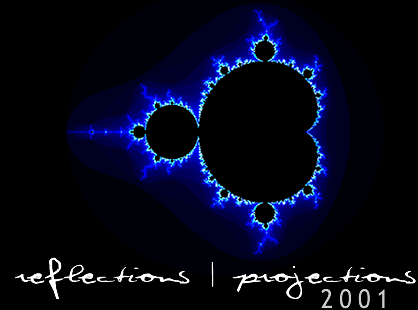

|

REFLECTIONS
| PROJECTIONS 2001
is the Seventh Annual Association for Computing Machinery
Student Conference and will be held from
October 12 to the 14. This year the keynote speaker
will be Dr.
Frederick P. Brooks, Jr., 1999 Turing Award Winner.
Approximately 16
sessions (individual talks, panel discussions, and workshops) will
encompass the past, present, and future of computing and cover a broad
range of topics. Representatives from many companies will be attending
this year's computing employment fair. This year's conference
will include MechMania, an exciting Artificial Intelligence
programming contest.
|